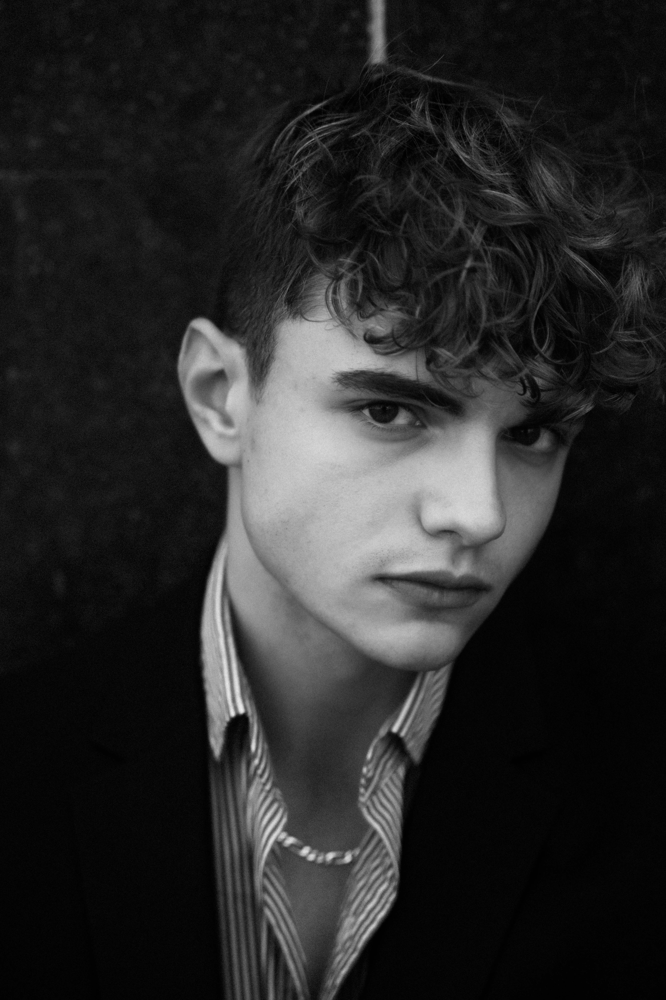
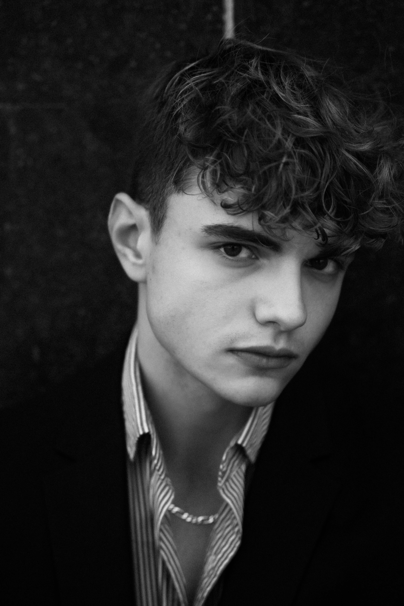

Galerie photos
Sélection de photos éditoriales, tests, portraits et séries personnelles. Cette galerie permet d’avoir un aperçu plus large de mon univers visuel et de ma versatilité devant la caméra.


 
